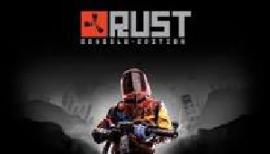
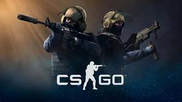
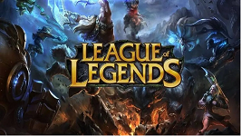

site Rust
Um pouco mais sobre o jogo
Rust é um jogo de sobrevivência multiplayer online desenvolvido pela Facepunch Studios. Lançado em 2013, o jogo inicialmente era um simulador de sobrevivência em uma ilha deserta, onde os jogadores precisavam coletar recursos, construir abrigos e se defender de outros jogadores e ameaças ambientais. Ao longo dos anos, Rust passou por várias atualizações e atualmente possui uma comunidade de jogadores muito ativa.

site csgo
Um pouco mais sobre o jogo
O jogo é conhecido por sua jogabilidade estratégica, trabalho em equipe e habilidades individuais dos jogadores. CS:GO é um jogo competitivo e possui uma cena de eSports muito ativa, com vários campeonatos e torneios de renome mundial.
Os campeonatos de CS:GO são eventos emocionantes, que reúnem equipes profissionais de todo o mundo para competir em
busca de prêmios em dinheiro e prestígio.

site dark
Um pouco mais sobre o jogo
Dark and Darker é um jogo eletrizante e envolvente que o transporta para um mundo sombrio e cheio de mistérios.
Enfrente criaturas assustadoras, resolva enigmas e descubra segredos ocultos enquanto a escuridão se intensifica a cada nível. Este jogo desafia sua coragem e habilidades, mergulhando
você em uma jornada além das sombras. Prepare-se para enfrentar o desconhecido e descobrir o que se esconde nas profundezas da escuridão.

site lol
Um pouco mais sobre o jogo
League of Legends é um jogo de estratégia e ação onde você assume o papel de um invocador poderoso. Escolha entre uma variedade de campeões com habilidades únicas, monte sua equipe e lute contra jogadores de todo o mundo. Melhore seu campeão, coordene táticas e trabalhe em equipe para destruir as bases inimigas.
Com gráficos incríveis e uma comunidade vibrante, League of Legends oferece uma experiência emocionante nos Campos da Justiça.